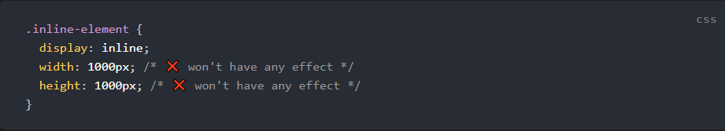
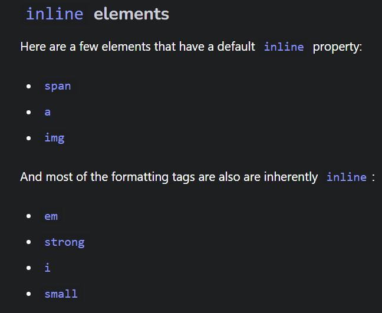
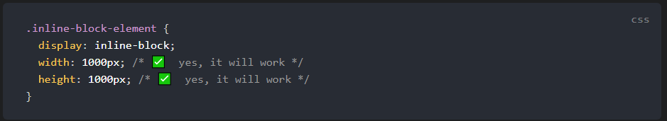
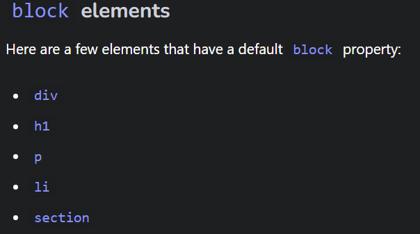

The display property specifics the display behavior of an element. It’s a must know for controlling the layout of an element. There’s a bunch of property values. But let’s start off with the essential inline.This one displays the element inline or on the same line. In other words, inline elements do NOT start on a new line and only takes up as much width as its content. So, if you try to set any width and height, it will have NO effects.
 It’s essentially the same thing as inline, except that you can set height and width values.
Block Remember inline elements appears on the same line. Well, block starts on a NEW line and takes up the full width available. So that means block elements will occupy the entire width of its parent element.
Imagine if you're attending a concert, you have rows of seats, right. If you assign your friend with an inline seat, they will sit next to you. So the thing with inline seats, it's that they all are the same physical chair.You can't manipulate the chair to make it larger or smaller. One size fits all they call it!Now your friend Jennifer wants to join you, but because she is the daughter of the owner of the stadium. She gets assigned an inline-block seat. Well, she still gets to sit next to you. Cause she's "inline" with you (bad pun, lol ) and of course you want her to sit next to you. However, because she is the daughter of the stadium, her mom wants to make sure she's comfortable. So she gives her a special seat, where her chair is customized and can be adjusted to make it bigger or smaller. Nepotism at its finest. Your classmate Angelina is also attending the concert. Now your friend Jennifer doesn't really like her. So she tells her mom to assign her a block seat. That way Angelina is not seated next to you. Instead she sits in the next row.